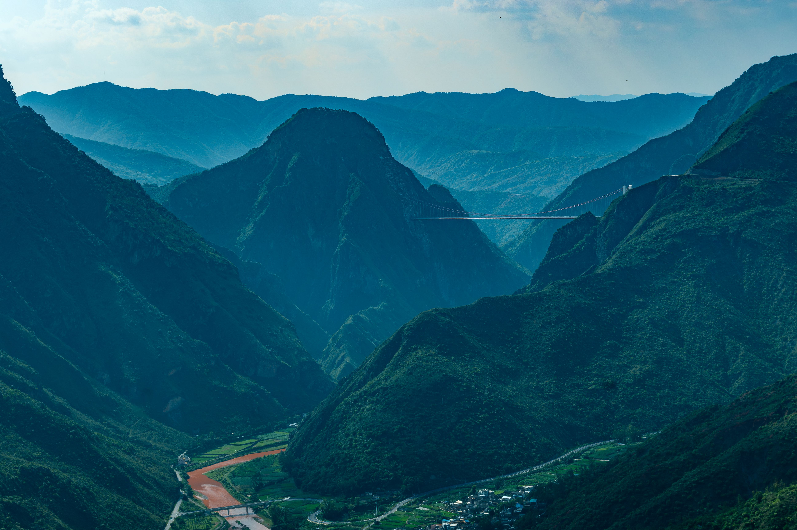
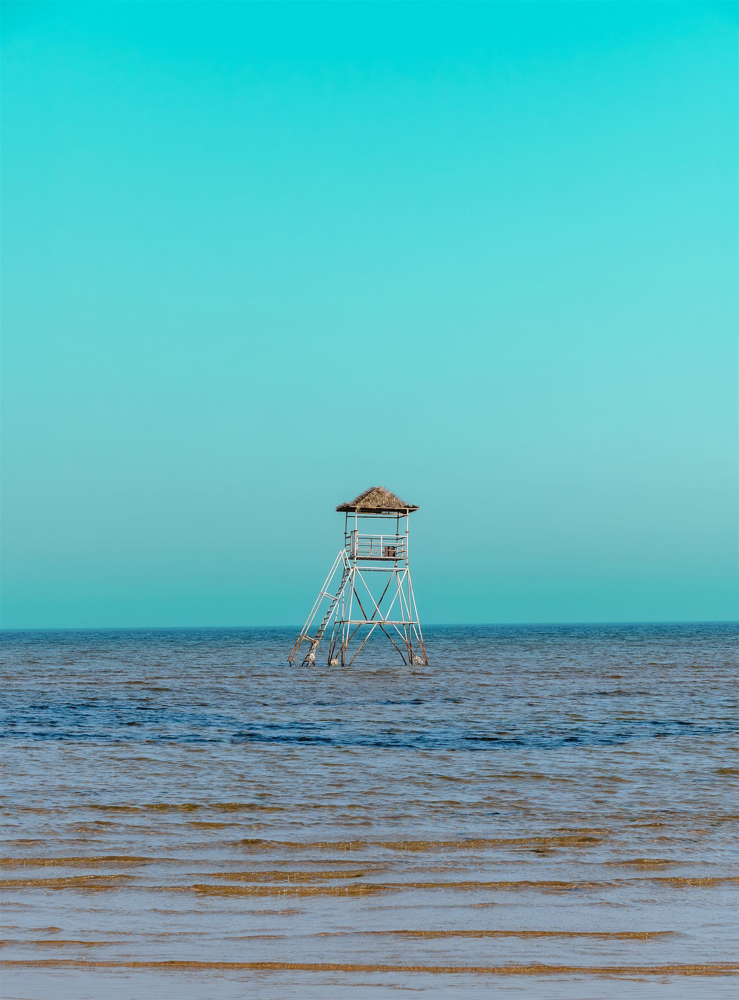
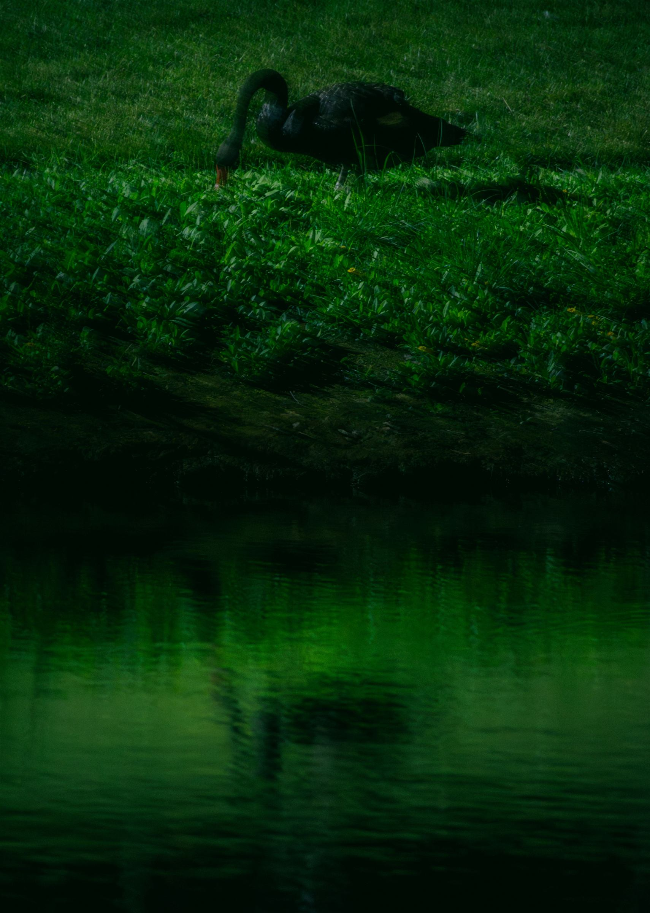
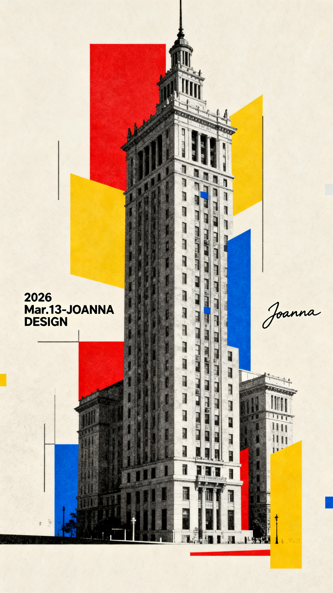

MATERIALS / IMAGE / AI — PERSONAL INDEX
暗夜
之闻asdcced
把实验室里的结构、城市的缝隙和夜里留下的光，放在同一张纸上慢慢观察。
ENTER THE FIELD ↓P-00 / CLOUD STUDY / 2026
MOTION / DRIFT
OBSERVE BEFORE NAMING✳MATERIALS / PHOTOGRAPHY / AI✳OBSERVE BEFORE NAMING✳MATERIALS / PHOTOGRAPHY / AI✳
01 / RESEARCH
明日之启
研究从一张还没有结论的图开始。这里保留假设、偏差和下一步，等真实项目材料逐步接管它。
R-01 / STRUCTURE
材料科学与工程 是我理解世界的入口：观察结构如何受力、表面如何反光，以及一个微小变化如何被记录。
我把 AI 当作形态推演的第二只眼，再把生成结果拉回真实尺度。项目摘要、实验图、代码和论文链接会在资料成熟后补入。
结构先于结论先看见材料怎样组织自己，再决定用什么语言描述它。
FIELD
材料 / 结构
METHOD
观察 / 记录
STATUS
open-ended
DATA
待补真实数据
02 / PHOTOGRAPHY
夜里留下的光
摄影不是研究的旁支。它让我练习等待，也让我相信一张照片可以先于解释抵达。

回到故乡，光线从山脊缓慢落下。
海面把孤独变成一种几何。
暗处并不空白，它只是降低了音量。03 / AI + DESIGN
形态练习
让机器提出陌生的构图，再由人选择、裁切、命名。过程本身也是作品的一部分。

A-01 / CITY COMPOSITE / GENERATED STUDY从一座城市
拆出另一种秩序
这组拼贴把历史建筑、几何色块和不同时代的视觉语法叠在一起。它不是研究结论，而是一张用来提问的草图。
“生成不是终点。真正的工作发生在筛选、标注和重写之间。”
继续把问题
带回现场
项目合作、研究交流、摄影与设计委托，都可以从一封邮件开始。正式邮箱和项目链接可在这里替换。
your-email@example.com ↗